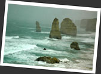

第三章
大洋路 Great Ocean Road
維省的 B100：大洋路 (Great Ocean Road) 名頭絕對不小，當中十二門徒石 (Twelve Apostles) 更加是世界聞名．不少人都將大洋路視為到墨爾本必去的旅遊景點，視其為世界首屈一指的 road trip 路線．
整條大洋路全長共 263 公里．一般人遊大洋路都是參加當地旅行團或者靠自己的交通工具．在墨爾本 Federation Square 的旅客中心內，有關大洋路的旅行團實在多不勝數．由於旅費緊絀，思前想後，最後只捨得參加最便宜，在唐人街，由當地華僑辦的一天團．其實，從墨爾本出發的話，一天的時間根本不夠走完整條大洋路，能跑一半已經很不錯了！將貨就價，也不能要求太多．看著團友們都三五知己高高興興的出發，一個人的我，陪伴自己的只有一份昨夜弄好的三文治午餐，想找個人說話都難......心中只求一睹十二門徒石，予願足以．
早上從墨爾本的唐人街出發，駛經 Geelong，一直開到海邊小鎮 Anglesea，再來到大洋路的起點．下車到了個海灘走一走，沙既白又幼．來到一處，司機忽然把車子停了下來，原來有幾隻樹熊正在路邊的尤加利樹上吃樹葉！需要知道，樹熊只靠吃尤加利樹葉維生，而這些樹葉的能量值是很低的．因此，樹熊每天平均都睡上二十小時！能夠在野外看見一隻隻在精精神神吃東西的樹熊，是一件十分難得的事情！
來到 Apollo Bay 午餐．在草地找了個地方吃我的三文治，再在海灘一個人逛一下．再上車後，便向我期待已久的十二門徒石出發．只是這時上天有意作弄我，天上的烏雲愈積愈厚．當我們快要來到十二門徒石時，更加下起雨來，而且愈下愈大．結果，我們只能在滂沱大雨之下"欣賞"十二門徒石，事實上，由於當時十分大霧，我只能看見六個門徒 (一般來說是可以看見八個門徒)．而其他有名的景點 Lord Arch Gorge, London Bridge 等，亦是在大雨之下狼狽的看過一下......我冒著相機壞掉的危險，拼命的拍下了一些照片．但結果當然是一張好照片都沒有，而我卻變成了一個渾身濕透的傻瓜．